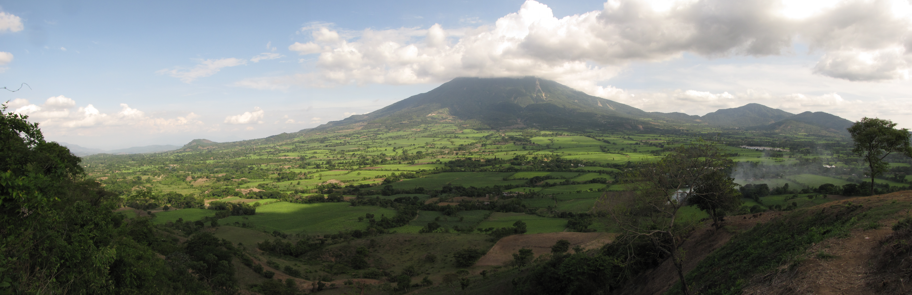

Fotografía: Daniel chavez castro · CC BY 3.0 · Encuadre adaptado bajo la misma licenciaIngenio Central Azucarero Jiboa
Conoce la empresa detrás de cada cosecha.
Desde San Vicente, transformamos la caña de azúcar en azúcar, melaza y energía renovable. Descubre nuestra trayectoria y nuestra actividad agroindustrial.
Conoce nuestra empresaQuiénes somos
La fuerza de la caña.
El valor de nuestra gente.
Somos una planta agroindustrial que transforma la caña de azúcar en productos que forman parte de la vida cotidiana.
Desde San Vicente, El Salvador, integramos la producción de azúcar y melaza con la generación de electricidad a partir del bagazo de caña. Una misma materia prima, distintas formas de aportar al desarrollo.
Así transformamos la cañaNuestras raíces
El comienzo
Construcción e inauguración del ingenio en San Vicente.
Un hito en calidad
Obtención de la certificación bajo normas de calidad ISO.
Transformación continua
Producción de azúcar, melaza y generación de energía renovable.
Conoce nuestros productos
Una trayectoria de calidad.
La certificación bajo normas ISO obtenida en 2003 forma parte de la historia del ingenio.
Conoce nuestra trayectoriaMás posibilidades de una misma caña.
Después de extraer el jugo, el bagazo se utiliza como biomasa para generar electricidad.
Descubre nuestra energíaProductos de nuestra tierra
Conoce cómo la caña se transforma en azúcar, melaza y energía renovable.
Nuestros productos
Una caña.
Muchas posibilidades.
Aprovechamos su riqueza para crear productos de valor y energía de origen renovable.
Azúcar
Azúcar cruda y azúcar sulfitada blanca, obtenidas de la transformación de la caña.
Melaza
Un coproducto del proceso azucarero que amplía el aprovechamiento de nuestra materia prima.
Energía renovable
Electricidad generada a partir del bagazo de caña, con aporte a la red nacional.
Nuestro proceso
Del campo a nuevas
posibilidades.
Un recorrido de transformación que conecta la agricultura, la industria y la energía.
- 01
Recepción
La caña llega al ingenio para iniciar su transformación.
- 02
Molienda
Extraemos el jugo y separamos el bagazo de la caña.
- 03
Elaboración
El jugo se procesa para obtener azúcar y melaza.
- 04
Generación
El bagazo se aprovecha como biomasa para producir electricidad.
Aprovechar más. Transformar mejor.
La biomasa y la calidad forman parte de nuestra actividad agroindustrial.
CañaBagazoEnergía
Aprovechamiento
integral
integral
Energía que nace de la caña
El campo también
nos da energía.
Después de extraer el jugo de la caña, su fibra conserva un gran potencial. Este bagazo se utiliza como biomasa para generar electricidad.
Así, el proceso azucarero da paso a una nueva fuente de valor: energía renovable que contribuye al abastecimiento de El Salvador.
Explora el procesoCalidad y sostenibilidad
Crecer con sentido.
Producir con propósito.
La calidad y el aprovechamiento de los recursos orientan nuestra actividad agroindustrial.
Una trayectoria de calidad
La certificación ISO obtenida en 2003 forma parte de la historia del ingenio.
Más valor de cada cosecha
Azúcar, melaza y biomasa: distintas formas de aprovechar la caña.
Energía de origen renovable
El bagazo conecta nuestra producción con la generación de electricidad.
Ubicación y contacto
Conversemos.
Estamos en San Vicente, en el corazón de una tierra de tradición agrícola.
- Visítanos
- Km. 68½, carretera de San Vicente a Zacatecoluca.
Cantón San Antonio Caminos, San Vicente, El Salvador. - Llámanos
- +503 2399-4900
San Vicente, El SalvadorUbicación ilustrativa · No a escala